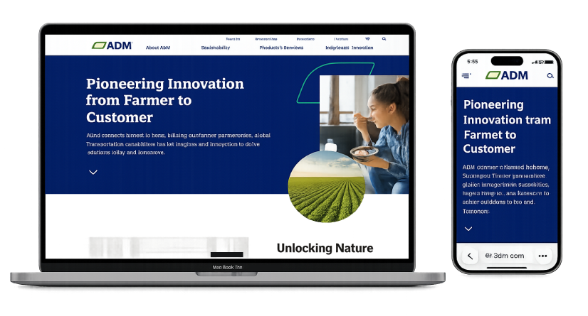
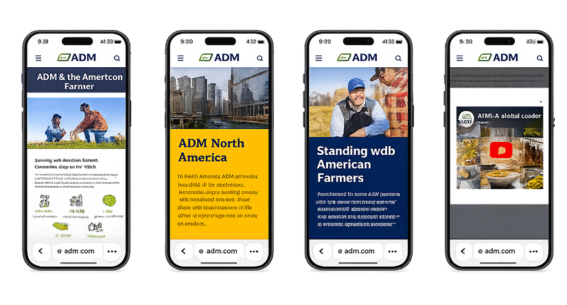
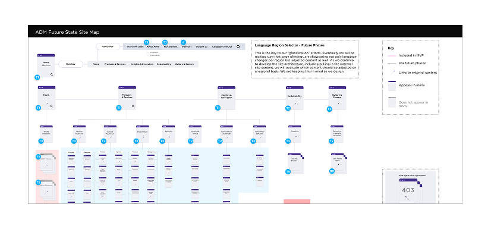
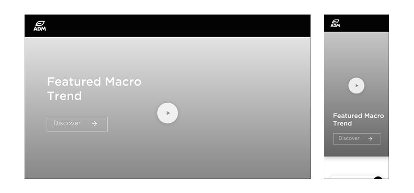

Digital Transformation
ADM Global Digital Transformation
Reimagining a sprawling global platform spanning 200+ countries and thousands of pages, for discoverability, scalability, and a unified experience.

Engagement overview
ADM’s global website had become a sprawling ecosystem spanning 200+ countries, thousands of pages, and multiple business units. Inconsistent navigation, taxonomy, and governance made content difficult to find and manage. We reimagined the platform to improve discoverability, scalability, and user experience while better reflecting ADM’s global leadership.
My role included digital strategy, content strategy, experience auditing, information architecture, taxonomy design, UX leadership, and design system strategy.

Our design approach
Audit, restructure, and build to scale.
Experience strategy
- Conducted a comprehensive experience audit
- Identified navigation, content, and usability issues
- Redesigned information architecture around user needs
- Rebuilt taxonomy to improve findability and governance
Content & design foundation
- Consolidated and streamlined content
- Eliminated duplication and aligned messaging
- Created a scalable design system and component library
- Established templates and governance for long-term growth

Business impact
The initiative transformed how ADM organized, managed, and delivered content across its global digital ecosystem. By improving discoverability and aligning business goals, content strategy, and user needs, we created a scalable foundation that simplified the user experience and positioned the platform for long-term growth.

Key results
What we delivered.
3,000+ pages to under 1,000
Consolidated a sprawling ecosystem into a lean, findable platform.
Simplified discovery
Streamlined navigation and content so users find what they need.
Governance & design system
Established governance, a design system, and a component library.
Modernized, on-brand
Refreshed the experience while preserving ADM’s brand equity.